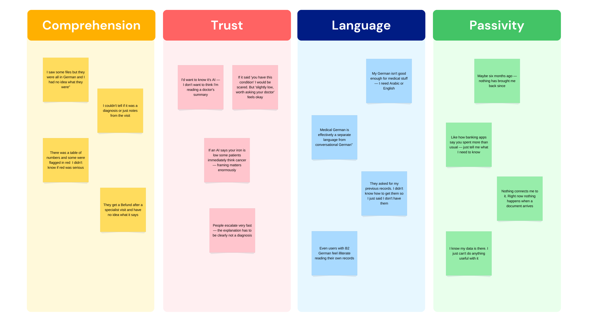
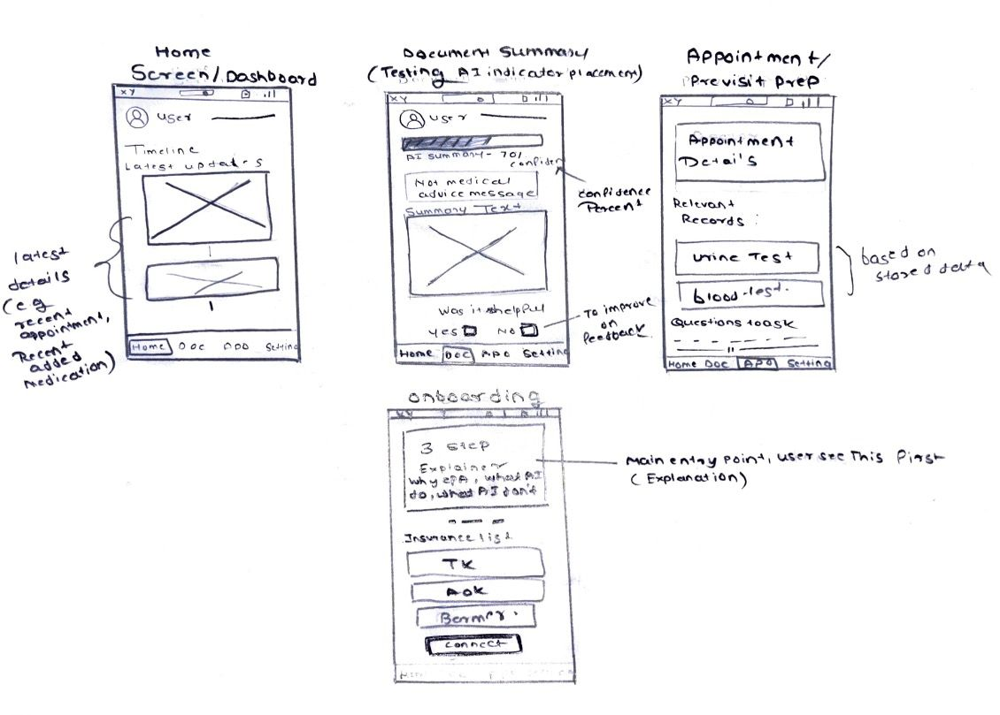
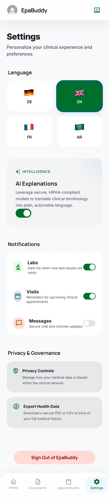

EpaBuddy — an AI companion for your electronic patient record
Germany's ePA went live in 2025. The data arrived. The understanding didn't. EpaBuddy turns inaccessible medical PDFs into plain-language understanding — without requiring medical literacy or German fluency.
The ePA was technically live. For many patients, it was still not useful.
Germany rolled out electronic patient records (ePA) for statutory insurance members in 2025. By early 2026, awareness of the system had grown significantly, but active usage remained limited. For many patients, the experience still felt fragmented.
Medical information was often presented as disconnected PDFs and technical terminology with little contextual guidance. People had the data. They just couldn't do anything useful with it.
Medical information arrives as disconnected PDFs.
Technical terminology with little contextual guidance.
German-only content — inaccessible to millions of residents.
No notification, no guidance, no reason to return.
Existing insurance apps answer: "Where is my data stored?"
But there is another question underneath: "What does my data actually mean?"
That comprehension gap became the focus of EpaBuddy.
What if the record could explain itself?
Rather than giving users more information about how to read medical German, I wanted to explore whether the product could interpret the document for them — with transparency, hedged language, and an explicit "not medical advice" boundary.
Help people understand what's in their health record — without requiring medical literacy or German fluency first?
This shifted the design goal from storage to interpretation. The experience should answer three questions as quickly as possible:
What does it say?
A plain-language summary of every document.
Can I trust it?
Transparency about when AI is speaking — and its limits.
What do I do next?
Actionable guidance — without ever diagnosing.
I wanted to understand where comprehension actually broke.
What I did
5 semi-structured interviews — German nationals + international residents
Competitive audit of TK App, AOK App, Ada Health, Vivy
Secondary research into GEMEINSAM DIGITAL 2026 — adoption targets missed due to UX, not technology
EU AI Act health provisions review — used as a design constraint, not a post-hoc check
What I was looking for
Rather than asking whether people "liked" their insurance app, I focused on the moments where they stopped: where a PDF defeated them, where a German word became a wall, where a red flag meant nothing. Every participant had tried their health insurance app. Every participant had stopped using it.
Core user needs
Research limitation: the interview sample was small and exploratory. The purpose wasn't to statistically represent all patients — it was to identify recurring behaviors and uncertainties that could be explored through prototyping and testing.
The numbers explained why the ePA felt empty.
The problem wasn't data access. It was interpretation.
I spoke with 5 participants across Germany — an exchange student from India, a software engineer, a nurse, a Syrian undergraduate, and a marketing manager. Every single one had a story about opening their record and closing it again. Not because the data wasn't there, but because they couldn't make sense of it.
Users want hedged, conversational AI tone — not diagnostic, not robotic. Framing certainty directly shapes emotional response.
Transparency about AI authorship is non-negotiable. Users don't resist AI — they resist AI that conceals itself.
The "Not medical advice" label isn't legal cover — it actively manages emotional response. Design it as a first-class UI element, not a footnote.
Language barriers cause users to abandon health interactions entirely. Multilingual design isn't a feature addition — it's accessibility.
Users want proactive surfacing of relevant information, not passive storage. The mental model is a smart assistant, not a filing cabinet.
Two motivated users. One shared wall.
Asel moved from Kazakhstan 8 months ago for a Computer Science Master's. English fluent, German A2. She received the ePA opt-out notification and ignored it. She has a follow-up blood test coming up — and doesn't know what the results will mean.
Pain Points
- Opened the TK app once, saw German filenames, closed it immediately
- Doesn't know the difference between Befund, Rezept, Überweisung
- Anxious about doctor visits due to the language barrier
- Googles symptoms instead of consulting her own records
Values
- Plain language over medical jargon
- Multilingual accessibility
- Reassurance, not anxiety
"I have the app but I don't really know what's in it or if it matters. I just get nervous when I see all those German words."
Reduce interpretation effort with plain-language explanations, multilingual access, and clear AI boundaries before asking users to trust the system.
Jonas works at a Berlin agency, goes to the gym, tracks his nutrition, and considers himself health-literate — but not medically trained. He proactively opted into the ePA. He has 11 documents in his record. He has opened 3.
Pain Points
- Lab results show numbers with no ranges or context
- Saw a value flagged red — didn't know if it was critical
- Sharing records with a new specialist requires a phone call
- Nothing creates a reason to open the app again
Values
- Proactive health management
- Prepared doctor appointments
- Data transparency & control
"I know my data is there. I just can't do anything useful with it. It's like a drawer I throw things into but never open."
Turn passive storage into action by surfacing relevant context, prioritizing what matters now, and helping users prepare for the next healthcare interaction.
A note on persona scope
Asel and Jonas represent motivated users who want to understand their health data but can't. A third pattern — the actively resistant user — emerged during interviews, but the project scope didn't support a third persona. Instead, their perspectives (discomfort with invisible AI, concern about patient anxiety) directly shaped the trust layer: the transparency badge, the four confidence states, and the placement of the "Not medical advice" label all exist to design for the skeptic, not just the willing user.
One shared need. Two contexts.
When something in my health record matters to me, help me understand what it means and what I should do next—without requiring medical expertise.
Asel needs clarity and reassurance when unfamiliar information appears. Jonas needs speed and prioritization when preparing for care. The product therefore needed to support both understanding and action without creating separate experiences.
Four clusters. Every design decision traces back to one.
Affinity mapping of all interview quotes collapsed into four research-defined clusters — comprehension, trust, language, and passivity. Each one maps directly to a design decision.

Cluster A — Comprehension
Users cannot understand what their health documents say. Medical terminology, German-only content, and raw PDFs make data meaningless.
AI Document Reader + contextual Lab Results View.
Cluster B — Trust
Users are open to AI assistance but need to know when AI is speaking and what its limits are before they can rely on it.
Trust-first onboarding + transparency badge + visible confidence states.
Cluster C — Language
Even users with B2 German describe feeling illiterate when reading their own medical records. Language is a hard wall.
Multilingual settings and plain-language explanations.
Cluster D — Passivity
The app has no voice, no agency. No notification when a document arrives. Nothing creates a reason to return.
Health Timeline + proactive AI nudges + pre-visit preparation.
The barrier isn't data access. It's interpretation.
The solution wasn't to expose more medical data. It was to reduce the amount of interpretation users had to do themselves.
Comprehension over collection.
Interpretation is the product.
Every major product decision was evaluated against this principle. If something created more jargon, it could be removed. If something increased uncertainty, it needed a designed state.
Existing products store the record. The opportunity was understanding it.
I reviewed existing health apps to understand where they were already strong and where patients still had to figure things out on their own.
🥇 TK App
Competitor 1 · Most UsedStrength
One of Germany's largest insurers (~11M+ members). Official ePA integration (TK-Safe) with high institutional trust.
Opportunity
ePA features buried behind multi-step navigation. Documents presented file-based with low interpretability. No AI layer. Primarily German-language.
Strong on infrastructure. Weak on usability + comprehension.
🥈 AOK App
Competitor 2Strength
Largest public insurer group in Germany. Broad service ecosystem — appointments, claims, records — with ePA access integrated.
Opportunity
Functions largely as a passive document repository. Limited guidance or interpretation of medical data. Sharing workflows can be fragmented.
High reach, but low engagement due to a passive experience.
🥉 Ada Health
Competitor 3 · AI LeaderStrength
Globally recognized AI symptom checker. Strong trust framing, clinical credibility, multilingual consumer-friendly UX.
Opportunity
No native ePA integration. Does not analyze existing medical documents. Focused on new assessments, not longitudinal records.
Answers "What could this be?" — not "What does my record mean?"
⚠️ Vivy
Competitor 4 · Reference CaseStrength
Early leader in centralized health record access. Clean, modern UX and a multi-insurer collaboration model.
Opportunity
Struggled with retention and sustained engagement. Value proposition unclear beyond document storage. No strong interpretation layer.
Solved aggregation, but not user motivation or understanding.
The gap
Across the products and flows I reviewed, I found a gap between record access and document-level understanding. Existing strengths were distributed across infrastructure, AI interaction, and consumer UX rather than combined around this use case.
The opportunity suggested by this audit was an interpretation layer between the raw record and the user—while real implementation would still depend on technical access, partnerships, and clinical validation.
Three decisions shaped EpaBuddy.
Rather than starting with a long feature list, I defined three product responsibilities directly connected to the research. The resulting screens serve these responsibilities at different points in the user's journey—they are not eight separate product bets.
Make trust a designed state, not a footnote.
Proactively engage — don't passively wait.
Interpret instead of store.
Trust-First Onboarding
A 3-step explainer answering the question Vivy never did: "Why should I give you access?" The flow earns trust before asking for data — explaining what the ePA is, what the AI does, and what it cannot do.
Two participants declined to connect health apps because they didn't understand what the app would do with their data.
Health Timeline
A chronological living feed of all health events with proactive AI nudge cards and filter-by-type. The ePA as a narrative, not a file drawer.
Passivity (Cluster D) — nothing created a reason to return. The timeline gives the record a voice.
AI Document Reader
Plain-language AI summary with a transparency badge, confidence indicator, and "Not medical advice" label. Four designed states: loading, success, low confidence, fallback.
Hedged, conversational tone built more trust than precise clinical language (P1, P3).
Lab Results View
Visual range indicators per result. Tap any value for an AI contextual explanation. Structured data deserves structured UI treatment.
P5 saw a red flag and didn't know if it was critical. Ranges and plain-language framing turn panic into information.
Pre-Visit Prep
AI surfaces the 2–3 most relevant records before a doctor appointment and suggests questions to ask. One-tap record sharing with the upcoming provider.
Jonas's JTBD — "walk in prepared, not starting from zero." Curation beat full lists: 3 users felt overwhelmed.
Consent & Sharing
Who has access to what, with per-provider toggle controls. GDPR-respectful, transparent, genuinely simple — no phone calls required.
P4 couldn't share records with a new doctor and simply said he didn't have them. Sharing must be one tap.
Medication View
Active and past prescriptions. AI plain-language explanation of each medication's purpose and common side effects. Refill reminder toggles.
Medication is the most actionable part of a record — and the most jargon-heavy. Comprehension starts here.
Language & Settings
Language selector (DE / EN / TR / AR), AI explanation preferences, per-event notification controls. Language is a core feature, not a preference.
Language (Cluster C) is a hard wall. Multilingual design isn't an addition — it's accessibility.
Empty State
The screen most designers forget — designed to reassure, explain, and convert, not just display a "no data" message.
First impressions of a health record set the emotional tone. The empty state is the product's first impression.
Proactive AI vs. user agency.
Making the AI fully autonomous would simplify the experience — but it would remove control from the patient, which is unacceptable in health. That wasn't the goal.
Proactively surface what matters — but always show the source, always hedge the language, and let the user decide.
Don't remove agency. Remove unnecessary effort.
Paper first. Pixels second.
Before opening Figma, I sketched the three core user flows on paper to validate information architecture — focusing on hierarchy, flow logic, and where the AI should speak versus stay silent.

A calm palette for a stressful context.
Warm off-white base + deep forest green = trust, calm, health — without the cold clinical feeling of traditional healthcare apps.
Color Palette
Four core tokens carry the entire system.
#1B6B4A#1A1814#E8F5EE#F7F4EFAI States — the most critical UI work in the project
Every AI output has four designed states. The experience never breaks — even when AI can't fully process a document.
Loading
"Reading your document…"
Success
Full summary + transparency badge
Low Confidence
Partial summary + original linked
Fallback
Can't read this type → original PDF
Trust is earned before a single document is opened.
Onboarding — Trust Setup
A 3-step explainer that answers the question Vivy never answered: "Why should I give you access?" It explains what the ePA is, what the AI does, and critically — what it does not do — before asking for any permissions.
Design Thought
The copy went through 3 revisions. Biggest change: removing "AI-powered" — which caused participants to skim — and replacing it with the plain-language benefit. "Limitations of AI" became "What the AI doesn't do" — same content, framing that acknowledges limits without leading with them.


AI Document Reader — The Centrepiece
Instead of a raw PDF, the user sees a plain-language AI summary with a transparency badge, confidence indicator, and a clearly visible "Not medical advice" label. Four designed states ensure the experience never breaks.
Design Thought
In early wireframes, "Not medical advice" sat at the bottom as a small footer. P3 (nurse) was explicit: patients emotionally anchor on the AI interpretation before reading anything below it. That moved the label to immediately below the summary header, at the same visual weight as the content itself. This also aligns with EU AI Act Article 13: disclosure at point of use, not buried in settings.
.png)
.png)
.png)
Pre-Visit Prep

Design Thought
Jonas's JTBD was "walk in prepared, not starting from zero." After testing, the default list was reduced from "all relevant records" to the AI-curated 2–3 — because 3 users felt overwhelmed by the full list and didn't know where to start.
What I chose to validate first.
The product vision extends beyond a single interaction, but I would prioritize one core question first: can users safely understand an existing medical document and know what to do next?
MVP focus
- Access an existing medical document
- Plain-language interpretation
- Transparency and confidence states
- Preparation for the next healthcare interaction
Later capabilities
- Full health timeline
- Proactive AI nudges
- Consent and sharing workflows
- Medication management
The full system, end to end.
Six additional screens that complete the product — from the living timeline to multilingual settings. View all in Figma →



Tap through the full flow.
Clickable Figma prototype covering onboarding, document reading, and pre-visit preparation. Open directly in Figma →
The experience was promising. The trust details needed work.
I conducted 5 task-based usability tests — 3 in-person, 2 remote via screen share. All participants used their own phones. Tasks were time-tracked; debrief interviews captured emotional feedback on confidence, clarity, and trust.
Can users find and read an AI summary quickly?
How do users respond to hedged language and visible uncertainty?
Do users recognize when AI is speaking?
What this meant: the primary task was understandable, but discoverability was weaker than intended: 2 of 5 participants needed assistance or took an unintended path. Improving discoverability would be a priority for the next iteration.
What users said
"This is the first time I actually understood what a lab result meant. The 'slightly below normal' framing didn't scare me — it informed me."
"I knew it was AI before I even saw the badge. The tone gave it away — and I mean that as a compliment. It felt helpful, not authoritative."
"I wasn't sure if I should tap the confidence badge or if it was just decorative. I tapped it and nothing happened."
"If it says 'this number is slightly low, worth asking your doctor' that feels okay."
Participants formed trust judgments from the language and framing they encountered during the test. The sessions did not ask them to clinically verify the underlying medical content.
Users judged trust before they could judge accuracy.
Scope of validation
These sessions evaluated the user experience of receiving AI-generated explanations—comprehension, perceived trust, transparency, and interaction behavior. They did not validate the medical accuracy or clinical safety of the underlying interpretations. A production system would require separate clinical review and safety validation with qualified experts.
Finding → Learning → Change
The most useful changes came from moments where the prototype exposed a mismatch between what users expected and what the interface communicated.
Confidence Indicator — colour-only → colour + icon + label
Colour-only green / amber / red pill. Two of five users didn't notice it at all; a third found the red state "scary".
High confidence · Based on structured data
✓ Icon + short text label
✓ Colour supports, not carries, the meaning
✓ Impossible to miss, legible without a legend
Finding: Two users missed the signal and one found the red state scary.
Learning: Colour alone was carrying too much meaning and emotional weight.
Change: Add an icon and explicit label so the state is understandable without a legend.
Pre-Visit Record Curation — All Records → 2–3 Most Relevant
Finding: 3 users felt overwhelmed by the full relevant-record list.
Learning: Relevance alone does not reduce cognitive load when users still have to decide where to start.
Change: AI now surfaces only the 2–3 most relevant records for the appointment type, with the full list behind "See all records".
Confidence Badge Interaction Unresolved — V2
Finding: One participant tapped the badge expecting an explanation, and nothing happened.
Learning: A confidence state needs an understandable rationale, not just a visible label.
Change: A tooltip or expandable explanation is the intended V2 behavior. It was not implemented or formally retested within the project timeline.
The interpretation model worked — with trust by design.
Participants generally understood the interpretation flow and responded positively to hedged, transparent language. Testing also showed that trust is a designed state, not a byproduct—and that the rationale behind confidence still needed stronger interaction design.
A promising interaction model for interpretation—validated for UX behavior, not for clinical accuracy.
A good concept also needs to survive reality.
Insurance API Access
Requires official TK/AOK ePA API integration and GesundheitsID authentication for real patient data.
EU AI Act Compliance
Health AI is classified high-risk — transparency, confidence, and override decisions were made with this in mind.
DSGVO / GDPR
End-to-end encryption, minimal data collection, and explicit per-provider consent for all shared data.
Medical Accuracy
AI copy needs clinical review before production — shaping hedged language and the four confidence states.
Potential Reach
Design rationale grounded in secondary research — not test outcomes.
What I would validate next
- Trust interaction: implement the confidence-badge explanation and formally retest whether visible evidence improves understanding.
- Real product infrastructure: explore official ePA access and authentication to understand what a live integration would realistically require.
- Safe interpretation: establish a clinical review and evaluation process before testing whether AI-generated explanations are medically accurate and safe enough for production.
The biggest surprise: users judged trust before they could judge accuracy.
Participants did not clinically verify the summaries; their trust judgments came from the language, framing, and transparency they encountered. Hedged, conversational phrasing helped the AI feel informative rather than overly authoritative—a UX finding that should be followed by separate clinical validation.
I also cut an early symptom-checking flow because it diluted the product's purpose. The stronger direction was narrower: help people understand and act on the health information they already have.
Comprehension is the product.
Trust must be designed.
The goal isn't to make patients medical experts. The goal is to help them understand their own health.